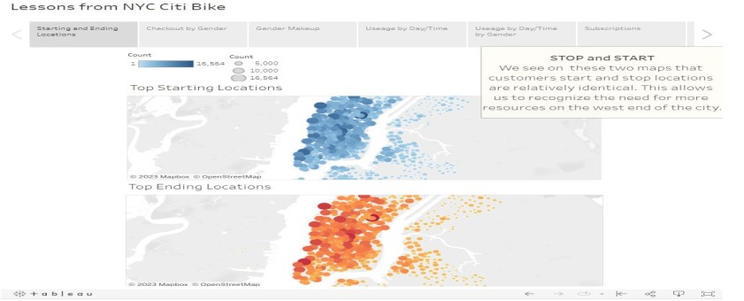
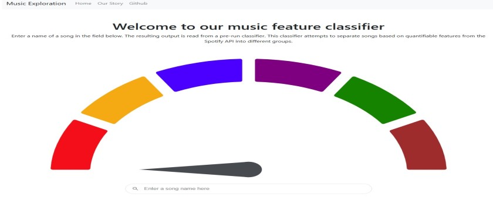
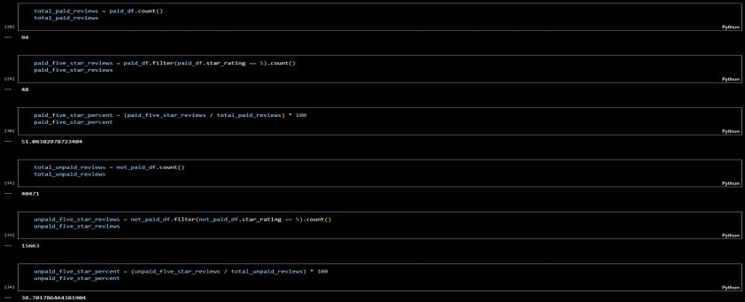

The objective of this project was to create a Leaflet map that achieved 3 main goals being access to GeoJSON data, interactiveness, and visualize said data. Which I was able to achieve using JavaScript, d3, GeoJSON data provided by https://github.com/fraxen/tectonicplates, and lastly mapbox API.

To calculate credit risk based off customers requesting loans. Using scikit, imbalanced-learn, SMOTE, EasyEnsembleClassifier, RandomOverSampler packages and algorithms just to name of few. I then dove into the database, created the features off of customers information. Which set the building blocks for a logistic regression for a supervised machine.

This project provieds a webpage that a user can research UFO sightings on. Allowing the user to filter the sightings by date, city, state, country and shape of UFO.

In this analysis my objective was to take a data set and answer questions using visualizations. When it came to the Citi Bike data, I used gender, location, membership and useage indicators to tell a story using Tableau.

The goal of this project was predict the mood of songs and group them by moods. Ideally intergrated into a music database so users could pick a mood and have a playlist compiled for them. My role in this project was designing the unsupervised machine to predict the moods using Spotify's public 1 million+ song databse. Using the sklearn, pandas and seaborn libraries I was able to achieve this. Firstly, started with the ETL process. Then I used Kmeans clustering and an elbow curve to find the optimal fitting for the machine model. Lastly clustered the sample set, collaborated with my team to decide on cluster moods then labeled our groups.

In this analysis I took a dataset from Amazon's AWS. I then performed the ETL process. Loaded the dataset into an AWS server. Connected that AWS to PGAdmin. Extracted the data in a Jupyter Notebook. Transforming the dataset into multiple dataframes using PySpark. And extracting statistics from those dataframes. Lastly, loading the new dataframes into tables in PGAdmin using a Spark server.